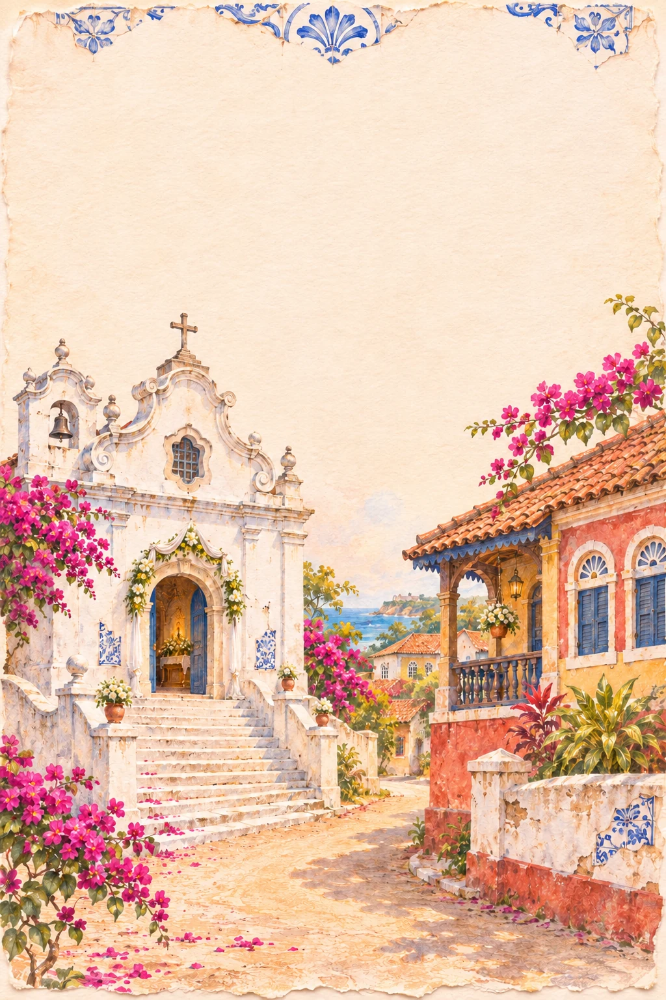
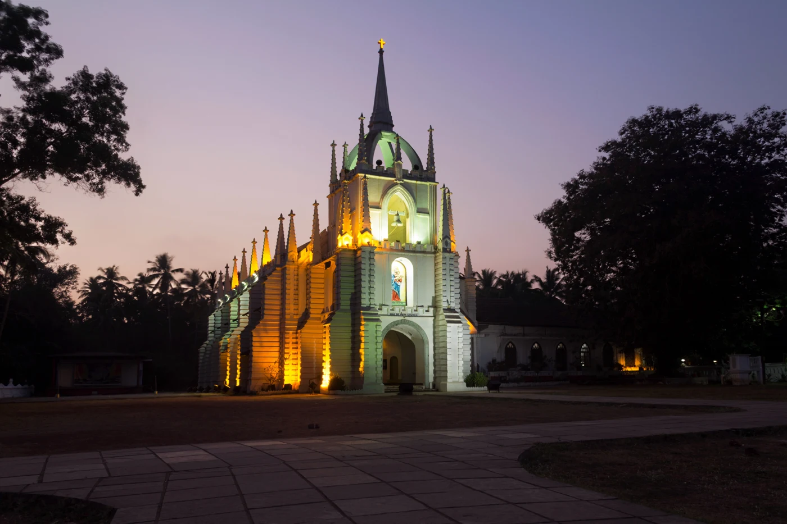
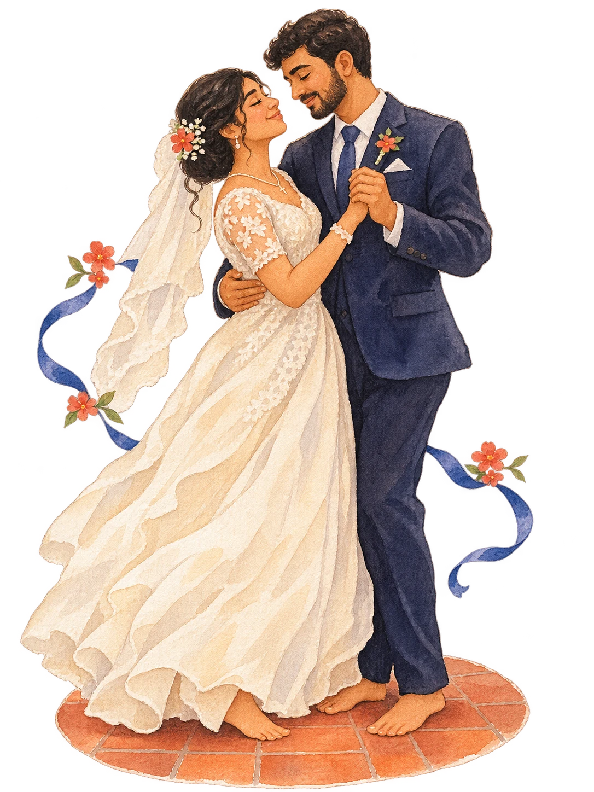

A GOAN LOVE LETTER
Your replyWITH OUR FAMILIES & GOD’S BLESSING
Anna &
Matthew
The promise. The party.
The people we love.
09 JANUARY 2027 GOA, INDIA

Not just a destination.
A feeling we want to share.
From our little porch
to the rest of our lives.
There’s always room
on the balcão.
A Goan porch made for conversation.
Our kind of beginning.
DEAR YOU,
Some days change
everything.
But we hope some things never do. A chair pulled closer. A story told twice. Someone insisting you stay for one more cup.
As we begin our married life, we want the day to feel like that: faith at its heart, joy spilling over, and all our favourite people within arm’s reach.
Come celebrate with us in Goa.
It won’t be the same without you.
Anna & Matthew
No perfect entrance required.
We’ll recognise you by the hug.

Goa, in photographs
An architectural love note, not our sample venue.
Two circles. One shared life.
Drag the rings, or use the arrow keys.
A CHURCH BELL. A DEEP BREATH.
And then,
“I do.”
Before God and the people who have loved us into who we are, we’ll make a promise for all the ordinary and extraordinary days ahead.
The wedding Mass
Saturday, 9 January 2027
St. Clara Chapel · Goa
Please be seated by 2:45 PM.
Fictional sample venue and time. All times IST.
A warm welcome, whatever your faith
Whether this tradition is familiar or new, we’re grateful you’re here. Follow along as you feel comfortable. Your presence matters more than knowing every word.
Good food.
Full hearts.
One more song.
Church clothes, garden laughter.
Stories across the table. A toast that turns into a happy tear. And a dance floor with room for everyone.
A little tap. A little magic.

Our first dance.
Definitely not our last.
The garden reception
Clara’s Garden · Goa
Dinner, toasts & dancing
Fictional sample venue. Festive dress, comfortable shoes.
Bring your good stories. Leave room for dessert.
Long after the
last dance.
Choose one little hope for our life together.
We’ll carry it to the end of this invitation.
Small words. A lifetime of meaning.